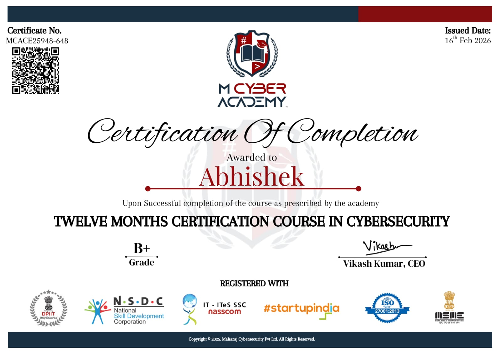
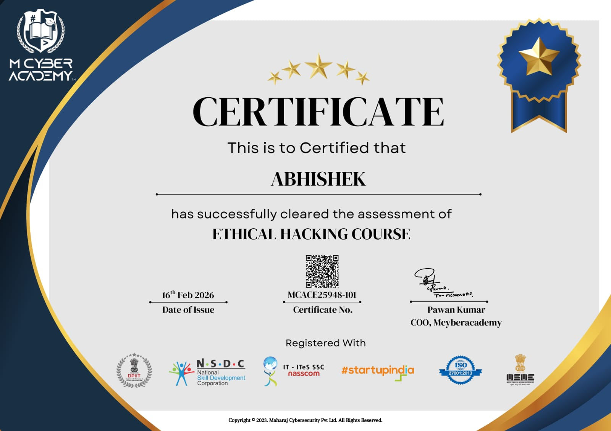
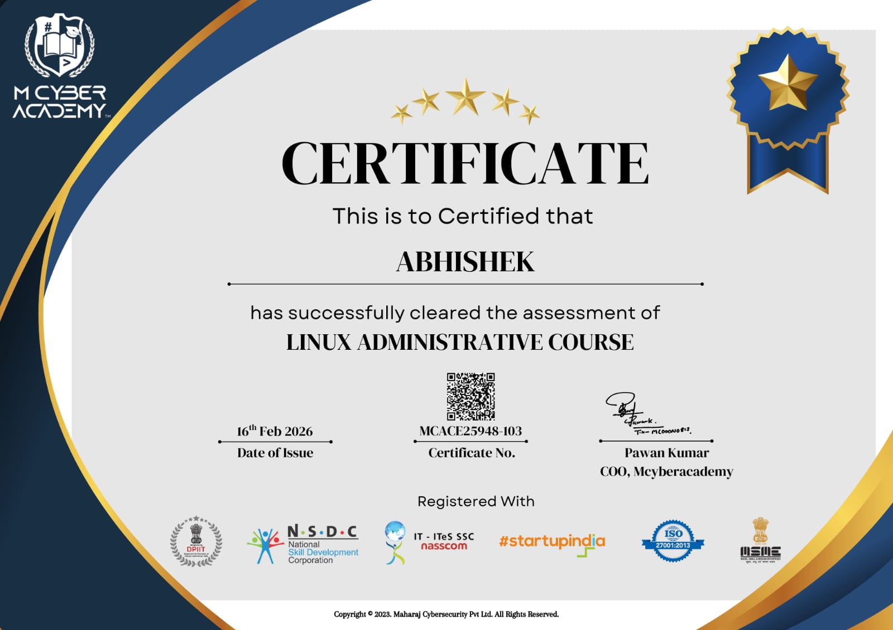

Cybersecurity professional specializing in building AI-driven Endpoint Detection & Response systems, red team simulation frameworks, and advanced threat detection tools.
Experienced in identifying and exploiting real-world vulnerabilities including SQL Injection, Cross-Site Scripting (XSS), and authentication flaws, while also developing defensive systems to detect and prevent cyber attacks.
🏆 2nd Place Winner – Cybersecurity Idea Hackathon, MDU Rohtak
🎯 Mission: To become a world-class Security Engineer and build next-generation cyber defense systems.
I am a passionate Cybersecurity Engineer specializing in Offensive Security, Endpoint Detection & Response (EDR), and Red Team simulations. Currently pursuing M.Sc Computer Science at Maharshi Dayanand University, Rohtak, I focus on building real-world cybersecurity tools to detect and prevent attacks. I developed an AI-based Endpoint Detection & Response system capable of detecting malicious processes and automatically responding to threats. Ranked in Top 8% globally on TryHackMe, I continuously practice web exploitation, privilege escalation, and real-world attack simulations. My mission is to become a world-class cybersecurity engineer and build next-generation threat detection systems.
Architected and developed an advanced Endpoint Detection & Response system capable of monitoring endpoint activity, identifying malicious processes, and simulating automated incident response. This project replicates core functionality of enterprise EDR solutions such as Microsoft Defender for Endpoint and CrowdStrike Falcon, providing hands-on experience in threat detection engineering and defensive security.
Designed and implemented a real-time threat detection platform to monitor attacker activity, analyse behaviour, and provide visibility into security events. CyberSentinel simulates a Security Operations Center (SOC) monitoring environment, helping understand attack patterns, threat intelligence, and incident analysis.
Developed a wireless attack simulation lab using ESP8266 microcontroller to demonstrate Evil Twin attacks and credential harvesting techniques. This project highlights wireless network vulnerabilities and demonstrates how attackers exploit user trust to capture sensitive credentials.
Implemented a USB-based attack simulation using Digispark ATTiny85 to demonstrate keystroke injection and physical access exploitation. This project illustrates real-world risks posed by malicious USB devices and highlights importance of endpoint protection and physical security.
Developed an educational keylogger tool to demonstrate how attackers monitor user activity and how endpoint monitoring systems detect such threats. This project enhanced understanding of endpoint surveillance, behavioural monitoring, and threat detection techniques.
Engineered a Red Team simulation framework to replicate real-world attack scenarios for cybersecurity training and research. This project demonstrates offensive security methodology, attacker lifecycle, and adversary simulation.

Twelve Months Certification Course in Cybersecurity
Web Application Penetration Testing (WAPT)
Advanced Penetration Testing
IoT Penetration Testing

Ethical Hacking Certification
Digital Forensics
Python Programming Essentials

Linux Administration
Networking Administration
Email: abhisheksaini37799@gmail.com
Phone: 8950423860
WhatsApp: 8950423860
LinkedIn:
https://www.linkedin.com/in/abhishekk-saini-a50538333